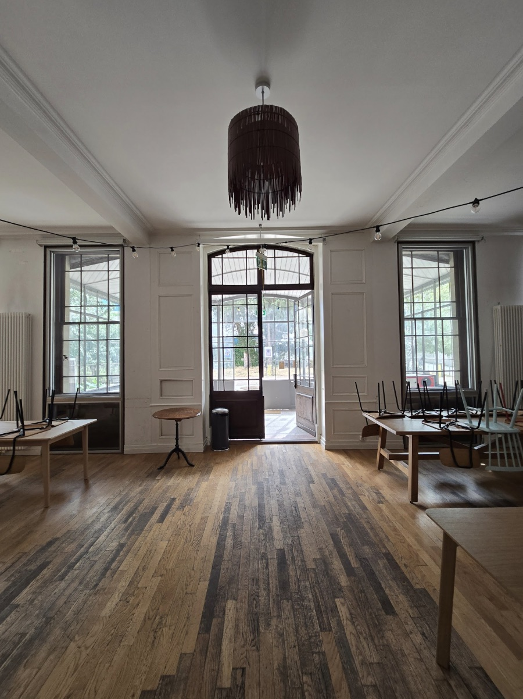

Geneva Sewing Club
Stitch & sip
A relaxed weekly sewing session in Geneva, and a chance to make time for your creative projects at the end of the week. Whether you're just getting started, building your confidence, working on a project you've been putting off, or simply want to sew alongside other people — you're very welcome. You don't need to be an experienced sewist, just some basic sewing knowledge is enough, and I'll be there to guide you whenever you need a hand.
Bring your own project, work at your own pace, ask questions, exchange ideas, and enjoy the simple pleasure of making things together. As a self-taught sewist myself, I know how exciting — and sometimes intimidating — it can be to figure things out on your own. I created the club to make that process more enjoyable, because sewing is simply better when you don't have to do it alone.
My hope is to build a warm, welcoming community around sewing, while keeping the craft alive and celebrating the creativity, skills and connection that come with making things with your own hands.
- Fri18h–20h, every week
- 10participants per session, maximum
- EN·FR·ESsessions held in all three
- Where
- Villa Freundler, Place de Saint-François 4, 1205 Genève
- Getting there
- Tram — stop Pont-d'Arve · Bus — line 1, stop Lombard
New in Geneva
From flat pattern
to finished garment
Every month, we choose a sewing pattern together and work on it as a group over four or five consecutive Friday sessions. We vote on the pattern at the start of each month, and I'll guide you through every stage — from understanding the pattern and preparing your fabric, to sewing, fitting and finishing your garment.
You're welcome to join even if you'd rather not make the collective project — bring your own project instead and use the sessions as dedicated time to sew, with help and advice whenever you need it.
- 01
Choose the pattern
We vote together at the start of the month on what the group will make.
- 02
Understand & prepare
Reading the pattern, taking measurements, and getting your fabric ready to cut.
- 03
Sew
Cutting, seams, darts, gathers, a zip or a tie closure — the garment starts to exist.
- 04
Fit & finish
Fitting adjustments, hems and the small details that separate handmade from homemade.
- Bring your own sewing machine, fabric and materials
- No machine? Two are available for participants to try, subject to availability — mention it when signing up
- A machine bag, trolley or small suitcase makes it easy to carry
- Need fabric prepared for your project? Available at an additional cost, chosen when you sign up